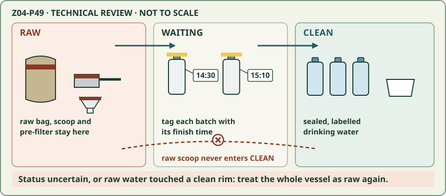

Z04-P49 · Water · Adapted historical material
Label and physically separate raw, in-treatment and potable containers
Eliminate mix-ups between untreated water, actively disinfecting batches and finished drinking water.
When it applies · Multi-person camps, households under boil advisories and backcountry groups running batch water treatment.
Equipment · Permanent marker or high-contrast tape, distinct raw-only and potable-only vessels and timer or written batch log.

Actions
- Assign unmistakable physical differences—color, shape or bold waterproof labels—to raw collection bags, active chemical-wait vessels and ready-to-drink containers.[W06, W05, ED]
- Keep raw vessels, scoops and pre-filters in a separate physical zone from clean drinking bottles, cups and cooking utensils.[W06, W08, ED]
- Tag any chemically disinfecting bottle with its finish time (or keep its lid visibly marked) so no one drinks before contact time expires.[W31, W12, ED]
Failure recognition · Handing an unlabeled clear bottle mid-disinfection to a thirsty companion or scooping boiled water with the same mug used to dip stream water.[W06, W05, W09]
Verify · Any group member can identify raw, waiting and potable vessels immediately in dim light without asking or guessing by clarity.[W06, W09, ED]
Stop or change course · If a container's treatment status becomes uncertain or raw water contacts a clean rim, reclassify the entire vessel as raw until re-treated.[W06, W09, ED]
Evidence and editorial notes
- W05 · CDC · How to Make Water Safe in an Emergency (2024-09-19)
- Section: Disinfect; Using light · Conditions: Matched product, concentration, dose, contact time and source condition
Support: Chemical disinfection is less dependable against some parasites. UV needs clear water and a correctly used device.
Limitations: Cold temperature and organic turbidity reduce chemical efficacy and UV penetration. · Conflicting evidence: None; exact manufacturer label governs dose and wait time.
Editorial note: Prohibits improvised chemical dosing when labels are absent. · Specialist reviewer: Drinking-water treatment specialist
Primary source · checked 2026-11-24 - W06 · CDC · How to Create an Emergency Water Supply (current web edition)
- Section: How to store emergency water; Safe storage containers · Conditions: Potable water intended for emergency storage
Support: Prefer sealed commercial water or clean food-grade tight-closing containers. Avoid containers that held toxic chemicals.
Limitations: Container shelf durability and rotation depend on plastic/material type and storage heat. · Conflicting evidence: None; reinforces strict raw-vs-clean segregation.
Editorial note: Used to enforce labeling and dedicated raw/potable vessel separation. · Specialist reviewer: Drinking-water safety and public health
Primary source · checked 2026-11-24 - W08 · CDC · How to Make Water Safe in an Emergency (2024-09-19)
- Section: Boil > Steps for boiling water > cloudy water · Conditions: Cloudy water with no identified chemical hazard
Support: Settling or cloth clarification only prepares water for treatment. Do not count it as disinfection.
Limitations: Removes coarse suspended solids only; dissolved toxins and microbes remain. · Conflicting evidence: Contradicts folklore claims that sand/cloth straining yields potable water; CDC governs.
Editorial note: Always depicted upstream of microbial treatment with an explicit barrier line. · Specialist reviewer: Drinking-water safety
Primary source · checked 2026-11-24 - W09 · CDC · Water Treatment Options When Hiking, Camping, or Traveling (current web edition)
- Section: Overview and water treatment methods · Conditions: Hiking or camping where no safe source is confirmed
Support: Even clear water can contain germs. Assess the supply and carry safe water or an appropriate treatment method.
Limitations: Visual clarity never detects microbes or dissolved chemical contaminants. · Conflicting evidence: None across CDC/NPS/EPA sources.
Editorial note: Reinforces clarity-is-not-potability invariant across all Z04 cards. · Specialist reviewer: Drinking-water safety and public health
Primary source · checked 2026-11-24 - W12 · US EPA · Emergency Disinfection of Drinking Water (current web edition)
- Section: Emergency Disinfection of Drinking Water > Bleach · Conditions: Emergency water when boiling is unavailable; unscented 5%–9% liquid household chlorine bleach
Support: Use one complete current public health protocol for the exact product and water conditions. The EPA instructions specify unscented bleach concentration tables and a minimum contact time; local directions take precedence.
Limitations: Ineffective against Cryptosporidium and chemical/fuel contaminants; bleach degrades with age and heat. · Conflicting evidence: EPA and CDC both note 8 drops (about 1/8 tsp) per gallon for clear water with 5%–9% bleach; exact concentration on current bottle governs.
Editorial note: Requires reading the bottle label rather than memorizing a single drop count for unknown concentrations. · Specialist reviewer: Drinking-water safety and public health
Primary source · checked 2026-11-24 - W31 · CDC · How to Make Water Safe in an Emergency (2024-09-19)
- Section: Disinfect: bleach measurement table; wait time · Conditions: Clear or clarified water disinfected with household bleach
Support: For bleach with 5% to 9% sodium hypochlorite: 2 drops per quart or liter, 8 drops per gallon and 40 drops per 5 gallons; double the amount if the water is cloudy, murky, coloured or very cold; let the water stand at least 30 minutes before drinking.
Limitations: A 1% product uses a separate table. Chemical disinfection works less well than boiling against Cryptosporidium and Giardia. · Conflicting evidence: EPA lists 6 drops per gallon for 8.25% bleach (W32); use one complete table.
Editorial note: Added in W2C-B07. · Specialist reviewer: Drinking-water utility and public health
Primary source · checked 2026-11-24
Current assessment · W2C-E044-W31 (2026-11-28) · Bounded primary support recorded: Ground the W2C-B07 water-treatment plates. Limits: Product labels govern tablets, filters and UV devices.
Current assessment · W2C-E046-W31 (2026-11-28) · Open: agencies differ; a specialist decision is needed: For 8.25% bleach CDC gives 8 drops per gallon (5% to 9% band) and EPA gives 6 drops per gallon. Z04-P39 tells readers to follow one complete table and shows the difference rather than averaging it. Limits: Both agencies are current; no harmonised value exists in the sources read.
Source lineage · B009 hygiene and CDC storage; new manuscript · Classification · Adapted historical material.